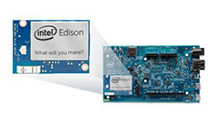

How to go from Zero to Blinking Light Hero
Instructions for Intel® Edison installed on an Arduino-compatible expansion board using the Intel® IoT Developer Kit (C/C++, JavaScript or Arduino development workflow)
1. Get Started with Intel® Edison
Find out what hardware is included with your Intel® IoT Developer Kit (“dev kit”). And review important assembly and cable hook up instructions.
2. Set Up Your Computer
Install software and drivers specifically for your computer’s operating system.
-
Mac or Linux user?
You have no special setup. Skip to Step 3 below.
-
Windows user?
3. Flash Edison Firmware
Some Edison boards have older firmware images on them. You may need to update the firmware to a newer version to get access to important features.
Install the Flashing Tool
Update firmware using the tool »
4. Shell Access
Gain command line access of your IoT board. Execute special Linux commands to configure your IoT board such as setting up Wi-Fi.
5. Get Your IoT Board Online
Get your board online in order to turn your IoT board into a true “Internet of Things” device. You also need the IP address of your IoT board to program it using the dev kit IDEs.
Connect to the Intel® Edison using the device mode micro-USB cable and a virtual Ethernet connection known as “Ethernet over USB”:
At home? Have a dependable Wi-Fi connection?
6. Install an IDE
Based on your programming language preference, install an IDE for Intel® IoT development:
- For JavaScript:
- For C/C++:
- For Arduino:
7. Sensor Tutorials
Experiment with sample code supplied for available sensors and actuators.
Also search for your component on software.intel.com/en-us/iot/sensors.
Now make your own creation!
Take pictures along the way. Create your own guide and post them to Instructables.com.
Running into issues?
Search for answers and post your questions to the Intel® Edison Support Community.
Resources
- Intel® Edison Product Brief (Specs)
- Intel® Edison Arduino Expansion Board Hardware Guide - For pinout listing, see page 7
- Intel® Edison Mini Breakout Board Hardware Guide - For pinout listing, see page 9
- Yocto Project: Foundation for the Internet of Things (Introduction to Yocto video)
- Intel® IoT Developer Kit Cloud-based Analytics User Guide
- Seeed Studio Sketchbook Starter Kit (Sensor sample code for Arduino IDE)